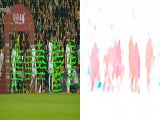

Auto Scene Collage Software and Editor
COIL-20: Columbia Object Image Library
COIL-100: Columbia Object Image Library
Columbia Gaze Data Set
Contaminants Database
CURET: Columbia-Utrecht Reflectance and Texture Database
DoRF & EMoR: Camera Response Database and Model
EDGEVAL: Global Measures for Edge Detector Evaluation
FaceTracer Database
LSD: Real-Time Relighting Algorithm
Multispectral Images Database
NEARSEARCH: Nearest Neighbour Search
PubFig: Public Figures Face Database
RAFA: Rational Filters for Focus Analysis
Rain Streak Database
RASCAL: Radiometric Self Calibration
REFLEX: REFlectors for FLEXible Imaging and Projection
SLAM: Software Library for Appearance Matching
Splash Database
STAF: Database of Time-Varying Surface Appearance
TVBRDF: Database of Time-Varying BRDF
VisualEyes: Exploring the World in Eyes
WILD: Weather and Illumination Database